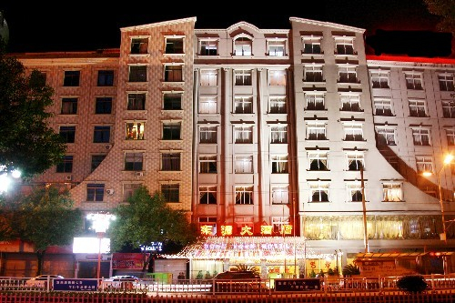
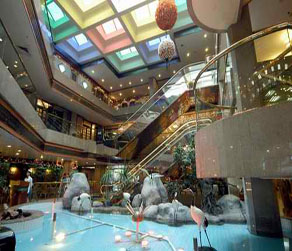
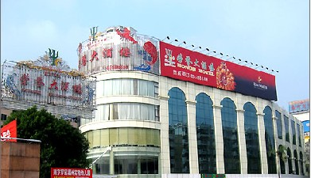
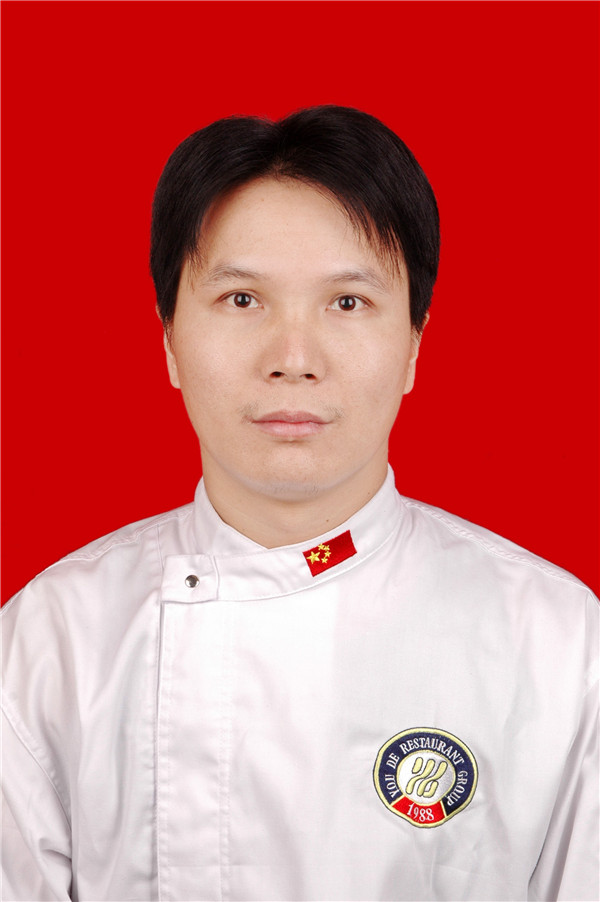

福建餐饮网
- 首页
- 菜谱
- 教学
- 名厨
- 新闻
名店推荐

福鼎市东源大酒店
厦门牡丹大酒楼有限公司体育路店

聚春园大酒店

荣誉大酒楼（梅峰店）
名师风采

马明东，中共党员，中式烹饪高级技师，国家职业技能鉴定高级考评员、国家一级评委。1989年起至今从事烹饪、管理工作。 擅长热菜烹调、食品雕刻，曾先后在南京军区烹饪大赛、福建省“福煤杯”烹饪大赛和“海峡两岸美食节”烹饪大赛获第一名；第五届全国烹饪大赛银奖；第五届中国烹饪世界大赛金奖，第六届全国烹饪大赛获团体、个人两枚金奖；并在第六届全国烹饪大赛总决赛中获得食雕全国第一名，被中烹协授予“全国最佳厨师”、“中国烹饪大师”、“中华金厨奖”称号。。。

胡满荣，1969年4月15日出生。中式烹调高级技师、中国烹饪大师。

熊书胜，国家高级技师、中国烹饪大师，国家一级评委。自步入烹饪行业以来，就立足“中国食用菌之都”古田，先后研制出食用菌菜肴300多种以上，编写出版三本食用菌菜谱二万多字。近年来，先后多次参加全国国际食用菌烹饪大赛，荣获团体与个人八枚金牌，奖牌榜位居同行业首位。 多年来，先后被省经贸委授予“福建十佳”厨师；劳动与社会保障厅授予“技术能手”；中国食用菌协会授予“珍菌王子”；中国烹饪协会授予“全国优秀厨师”；荣获“中华金厨奖”和餐饮业最高奖项“卓越贡献奖”。。。

一九六四年出生于福建省厦门市，现任福建省厦门国际会议中心酒店&厦门国际会展酒店行政总厨，一九八三年毕业于福建省技工烹饪学校，同年九月被分配在厦门宾馆工作。并拜中国闽菜泰斗童辉星为师.在烹饪专业技术上取得了很大进步，现为中国烹饪协会会员，中国烹饪协会名厨委员会福建工作区主任，世界中餐名厨交流协会理事，福建省烹饪协会常务理事，厦门餐饮同业公会常务理事、餐饮业国家一级评委，国家职业技能竞赛裁判员，国家职业技能高级考评员，国际食品设计专家。。。

吴志强，1966年7月出生，中式烹调高级技师，高级营养师；中国烹饪大师、2012荣获中国烹饪大师金爵奖、中式烹调国家一级评委、国家级裁判员；中国名厨专业委员会委员、中华金厨奖获得者；福建闽菜大师、福建省技术技能鉴定专家委员会委员、福建省高级考评员、【福建省五一劳动奖章】获得者、被评为“泉州第五批优秀人才”； 先后获得全国优秀厨师、中国百强奥运超厨，多次参加并获得地市、省级、国家级烹饪比赛金奖，在第六届全国烹饪技能竞赛总决赛获纯金一座。。。